Chapter 2
Systems design considerations
2.1 Introduction
To design a system which can counter a particular threat you must, first understand what the threat is, what measures can be taken to counter it and who will operate the system to do this. In this chapter, we will consider these points first of all and then discuss how the various possibilities can be translated into requirements for a radar system.
Small drones (or Unmanned Air Systems – UAS – to be more formal) have become widely used and easily obtained in recent years. Many of these are bought essentially as toys or by hobbyists, others are used commercially, mainly for aerial photography and surveying. As with any human invention, it is not long before a nefarious purpose was found for new technology.
Probably the most widely covered incident involving a misuse of drones occurred over Gatwick Airport, south of London in December 2018, when drones flown in the approaches to the airport saw flights cancelled for over 20 h causing a lot of disruption and with a huge financial impact. At the time, the immediate speculation was of this being a terrorist attack or deliberate disruption by climate change protestors. When no groups came forward, speculation moved onto the disruption being due to ‘state actors’ but months later the police investigating still had no idea who had carried out the flights or why [1]. While large companies such as Amazon have trialled drones to be used as delivery vehicles in congested cities and their use to deliver food and medicine in remote areas suffering natural disasters is also being looked at, the most widespread use of drones for delivery so far has been dropping contraband over prison walls [2].
In war zones, commercially available drones have been used for military purposes. A small drone equipped with a camera and a downlink to a tablet can be carried by ground troops and used to see what is over the next hill. Combined with larger, high flying military drones, it is possible for information across a battlefield to be immediately available to commanders on the ground. In the recent conflict in Ukraine, drones of many types were deployed making it very difficult for troops and vehicles to be deployed without being spotted well in advance of the position they were intending to take up. Commercially available drones can also be adapted to carry small but potentially lethal quantities of explosives (like a hand grenade) effectively turning them into guided weapons. Use in this way has been widespread by various parties in Syria and Iraq.
This latter threat has led to widespread concern of the use of drones for terrorist attacks on civilians and even political assassinations. While the former has not yet happened, in 2018 an assassination attempt was made on Venezuelan president Nicolás Maduro [3]. Targeting an individual in a crowd is not very easy; rather landing an explosive device randomly in that crowd is considerably easier. The possibility of an attack on a political rally, music festival or sporting event is one of the many concerns which modern police and security services have to think about.
The first attempt to limit the threat from drones has been a legislative and technological strategy to present misuse. In the United Kingdom, anyone responsible for a drone between 250 g and 20 kg has to register with the Civil Aviation Authority (CAA) as a user [4]. Drones which fly by GPS also now have pre-programmed software which prevents the craft from going above a certain height or flying over airports or sensitive buildings like nuclear power stations. These measures may prevent accidental misuse or casual attempts at causing a nuisance, and they will not stop more organised miscreants who can bring in drones from abroad which do not have the limiting software or reprogram the drones to remove its inhibitions (and certainly will not send a form off to the CAA). More to the point, as is clear from the previous text, drones currently pose most threat in regions where legislative control has effectively broken down.
The drone has flown out of Pandora’s Box and it is not going to be easily piloted back in.
2.2 The systems design challenge
There is therefore a growing need for detecting and countering threats from small drones. Counter-UASs (C-UASs) can take many forms and are very much still emerging as a technology. At the core of any C-UAS is a sensor which can at least detect, most likely track drones and if possible, identify its type and purpose. To understand what a sensor must do to help counter a drone, we must first think about the system that it will be part of. The initial ‘systems thinking’ involves three questions:
- Who is the customer/end user?
- What are they trying to achieve?
- How much can they afford?
The answer to question 3 will depend on question 1 and will likely influence question 2. It is possible to adapt high-grade military sensors for use in countering drones but this would likely be beyond the budgets of civilian agencies and the weaponry where such systems are designed to support would be overkill, possibly literally. If police forces, prison services and security contractors require a C-UAS, then they need to be affordable, reliable, easy to deploy and easy to use. The engineering challenge in producing a low-cost system which can be used with minimal training is greater than that for a specialised system used by experienced operators. This is why innovative research is still very much needed in determining how the drone threat can be reduced and eliminated.
The system design really needs to start at the endpoint and work backwards. To do this, we need to know exactly what will be done to counter the drone once it has been detected. There is no single answer to this and what countermeasures can be deployed will depend very much on the environment a C-UAS will operate in. In a war zone, the risk of collateral damage and death or injury has a level deemed acceptable under rules of engagement. In a crowded civilian environment, the potential harm the drone could inflict must be weighed up against the possibility of the countermeasure doing more harm than the drone would have. Various methods of countering drones have been tried or proposed. These will be summarised later, with discussion on their viability and what the sensor requirements to support the countermeasure would be.
Avoidance – this is the simplest case where once a drone is detected in an area where it poses a risk that area is avoided by anyone or anything at risk. For instance, this could be closing down airspace around an airport or evacuating a crowd of people for an area they are gathered in. While this approach minimises the risk of harm, it still allows the malicious operation of drones to be disruptive which may be the desired effect, and the publicity gained could encourage others. There is also the likelihood of legitimate drone use being wrongly reported as a threat and creating a panic out of nothing.
Tracking back to launch point – finding out where the drone came from and where it returned to allows the drone users to be found and questioned. This can minimise disruption by preventing repeats of the incursion and also determine whether the usage was malicious or ignorance. To do this, the sensor needs to be able to detect and track the drone and work out the trajectory to estimate the location of the launch point.
Jamming the UAS guidance – for drones with a remote ‘pilot’ the link from the operator console to the drone is either jammed or in a more sophisticated approach spoofed so that guidance of the drone can be taken over. For this countermeasure, the presence of the drone in an area where it poses a risk needs to be detected and the frequency of the link between operator and drone found to get up the jamming. The jamming signal can fill a large volume of airspace so does not need to be highly directional. If the drone can be directed away from the area at risk or if it crashing poses minimal risk then this approach is effective. If, however, the drone is carrying explosives, then allowing to lose control still risks death, injury or damage – just not where the terrorists intended. Moreover, many drones can have pre-programmed flightpaths that are followed by GPS. Jamming their guidance would require jamming GPS which would have wider consequences in the area of operation which may be unacceptable and still does not get round the problem of a weaponised drone going astray.
Directed energy weapons – increasing the energy of the jamming signal to be a Radio Frequency (RF) Directed Energy Weapon (RFDEW) temporarily disrupts or even can burn out the electronics in the drone causing it to crash. If the drone is weaponised, there is the still the risk of the drone exploding where it was not aimed and still causing harm unless the RFDEW can destroy the detonator also. The RFDEW will need to be directed much more accurately than a jamming signal which will require the drone to be tracked and very likely a linking of the pointing of the countermeasure to the sensor. Even then, there is still a risk of the RFDEW damaging other nearby electronic systems, which may be unacceptable. A high-power laser would produce a more directional beam which is less likely to cause collateral damage so long as there is nothing vulnerable immediately behind the drone. The narrower beam requires very accurate steering and therefore almost certainly high accuracy tracking coupled to the pointing of the laser.
‘Soft’ interception – these countermeasures make physical contact with the drone to divert it or bring it down. Methods include throwing a net to catch it in or directing a high-pressure jet of water or air to know the drone off course. The sensor would be required to detect the drone in a high-risk area then track it with enough accuracy to allow an operator to direct the countermeasure at it. The same proviso of collateral damage from a weaponised drone holds here too. Another interception method demonstrated has been to train large birds of prey to catch the drone. Other than providing a warning as to when to release the raptor, it is difficult to see how a sensor would be used in this case.
‘Hard’ interception – as the drones appeared over Gatwick, many asked ‘why can’t the police just shoot it down?’. The answer to that is that this has been tried with skilled marksmen who have found it very difficult to hit a small object which can go from moving to hovering almost instantly. A high-velocity rifle bullet would certainly shatter the drone while disintegrating itself; however, if it misses it can do a lot of damage as it comes back to the ground so risky to use in the urban environment. Spreading shot (like a clay pigeon shoot) has proven more effective in hitting a drone to bring it down but will not do the same level of damage to the drone and its payload. Using a sensor to aim the gun is generally considered to be necessary over relying on a human to find and shoot down the drone. Guided munitions have been shown to be able to intercept small drones [5] but using a $3 million missile to shoot down a drone which costs £24.99 from Argos is not a widely feasible solution. Smaller, cheaper guided rockets may be developed specifically for the task. If this happens, then the guidance system of the weapon needs to be matched to the accuracy of the track the sensor used to cue it can achieve.
Drone on drone – a system which has a guidance system and can match the speed and manoeuvrability of a drone is of course another drone. The best way to bring down a drone makes to guide another drone to the vicinity of the threat drone and then let it use a camera linked into its guidance system to either crash into the threat to destroy it (possibly with a small explosive charge), to divert it of course of possible even capture it in a net.
From the previous survey, we can see that the performance the sensor must achieve varies from detecting the presence of a drone to being able to track it accurately enough to point a gun at it. In designing the C-UAS, we must also consider the following:
- The range at which the drone needs to be detected.
- The volume of airspace which needs to be searched to find where the threat may come from.
The range is driven by two things as follows:
- The range at which the countermeasure is effective.
- The amount of warning time ahead of that the operator needs to make the decision to deploy the countermeasure or not.
The volume to be surveyed depends on what is being protected from drones.
- Battlefield deployment: if there is a frontline, the direction from which drones will appear can be anticipated narrowing the search volume.
- Perimeter protection of a sensitive facility (e.g. prison or sports stadium): the direction in which a drone may appear is less easily anticipated, especially when surrounded by buildings or trees which can provide cover for the launch point.
- Approaches to an airport: in theory the volume to be protected is any direction an aircraft can take off and land from up to the height which small drones can reach – potentially a very large volume. Multiple sensors may be needed to protect such large volumes of airspace which could rapidly become expensive unless innovative low-cost solutions can be found.
Electronic Support Measures (ESM), which intercept RF transmissions and can find the direction from which they come (and estimate range if triangulation by multiple intercepts is possible), can reduce the volume to be searched or at least the direction in which the search should be started. This is only possible for drones which are remote piloted via a data-link and rather than following a pre-programmed flightpath. Even if the search volume can be narrowed by ESM, it is still likely that the drone will need to be located and tracked more precisely and identified as a threat before a countermeasure can be deployed.
The range at which the sensors need to be effective and the volume of airspace to be surveyed are not the only challenges in developing sensors for a C-UAS. A small drone is a ‘difficult target’ hard to spot optically and with a low Radar Cross Section (RCS). Conventional detection methods developed for larger, more reflective targets are unlikely to work against drones, not at least until they are already close enough to pose a threat. Trying to process into noise and clutter to find small objects further away using established methods would likely result in a False Alarm Rate (FAR) which would be so high as to render the system unusable to the operator without novel detection methods to determine what is the true object of interest in a scene.
Potentially as much of a problem of as false alarms are false positives – genuine objects which will be detected but which are not of interest to the end user. Birds are the most obvious entities in the environment which can be confused with drones. Trees blowing in the wind can also cause false alarms. As drones can approach a low altitude, moving vehicles and even people could also produce confusing returns. The ability to determine not only where a target is and predict where is going, but also to be able to classify what that object is and thus if it is of interest to the end user. Even the broadest classification of drone/not drone is useful in informing the end user on where most attention should be paid. The finer the categorisation of drone types can be made, then the better informed the end user will be to make decisions with confidence.
Sensor fusion can significantly increase the confidence in identifying the drone as a threat and in eliminating false positives. If a drone is communicating to a remote operator via a data-link, it will have an RF signature which can be found using ESM, while birds should not be emitting at RFs. Similarly, a drone may have a similar RCS to a bird, but a different thermal signature. The application of sensor fusion requires an accurate estimation of direction and/or position of the possible threat from each sensor so the data produced by each can be associated with the same object in a scene.
Having confidence in the information provided is as important as the other attributes of the sensor performance such as range and volume coverage – detecting more objects at longer range without knowing what they may be only adds to the workload of the operator and reduces their ability to make quick decisions. In developing classification algorithms, it is vitally important to assess how well they work in theory and in a practical environment. Robust classification can aid the decision-making process by the end user significantly. As well as having confidence that what has been detected is very likely to be a drone, having an indication what the type of drone is and hence its size and potential payload allows the end user to assess what threat the drone may pose. If it can also be determined if the drone is carrying a payload and even what that payload may be, then this would make the possible threat clearer to the end user at an earlier stage of the operation.
The combination of detection, tracking and classification of the drone allows the end user to determine the intent of the drone. Intent is what the end user needs to work out to decide what action, if any, it is appropriate to take. A small drone with no payload flying where it should not be but not approaching a sensitive area is more likely down to nuisance or ignorance than posing a threat in which case trying to find the drone user to have a word with them is more appropriate than risking collateral damage with a more extreme countermeasure. For a larger drone, with a payload approaching a football stadium immediate action with some risk is more likely to be acceptable. If multiple or even swarms of drones are deployed then intent becomes even more important in determining which of the drones pose the greatest and most immediate threat and therefore need to be countered first.
Protecting facilities and airspace around airports will require continuous monitoring of the volume of airspace where a threat could appear. Having human operators doing this becomes expensive in terms of man hours and training and it is also difficult for an operator to monitor a system for hours on end without becoming fatigued and potentially finding false threats and missing real ones. An autonomous C-UAS becomes attractive in these scenarios. It would be more likely to be semi-autonomous where the system would alert an operator to potential threats for them to make the final decision on the appropriate response. Introducing autonomy in a system requires a low false alarm/false-positive rate; otherwise, the operator ends up being as busy as if the system were manually operated. For such systems, classification and determination of intent become essential in only alerting the operator as needed.
2.3 The role of radar
The usual benefits of using radar systems for wide area surveillance – high volume and long-range coverage, day/night operation and penetration of atmosphere, weather and obscurants – hold to some extent for drone detection but with some additional challenges also. The RCS of the drone can be very small so the ranges at which they can be detected will be shorter than conventional air surveillance radars typically operate – a few hundreds of metres to a few kilometres as opposed to tens or hundreds of kilometres. While this reduces the effects of the atmosphere, a relatively high peak power will still be needed to detect a small drone at a distance which gives enough time for a countermeasure to be decided upon and deployed. As wind and heavy rain can prevent drones from being able to fly, weather penetration is also less of a concern. Drones can be operated in the dark, or through mist or smoke especially if they are following a pre-programmed flightpaths so the operator does not need visual guidance.
It is possible to adapt a conventional pulse-Doppler radar to detect drones. In 2014, a Leonardo PicoSAR compact e-scan radar [6] designed for ground surveillance from medium sized unmanned aerial vehicles, helicopters and light aircraft was used in a ground-based experiment to determine if a small hobbyist drone (a DJI Inspire I quadcopter) could be detected at a useful range (Figure 2.1). The PicoSAR operated in Moving Target Indicator (MTI) mode with a waveform modified to have a shorter pulse to reduce the minimum range for detection. An example of the data collected from the experiment is shown in Figure 2.2.
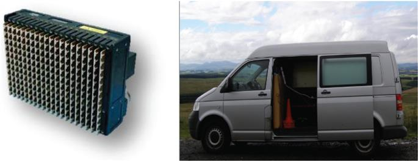
Figure 2.1 The PicoSAR radar and van mounting for counter-drone experiment against DJI quadcopter
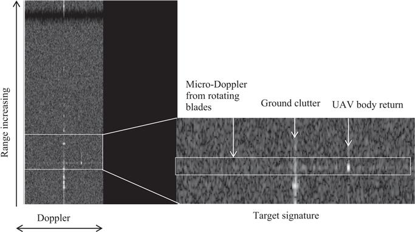
Figure 2.2 Example range-Doppler map from PicoSAR counter-drone experiment
This range-Doppler map is typical of what can be expected as a drone measurement from a stationary ground-based pulse-Doppler radar. The ground clutter is confined to a strong line at DC. The return from the body of a moving drone is separated from this line by the Doppler shift in frequency related to the speed of the drone and whether it is moving towards or away from the radar. The rotating blades also return energy to the radar which can be seen as a spectrum in Doppler related to the number of blades and their rotation rate known as micro-Doppler. During the experiment, the drone spent some time hovering at which time the return from the body became coincident with the ground clutter; however, the micro-Doppler spread out of the line at DC so the presence of the drone could still be detected.
While radars can clearly detect small drones, knowing that they are drones rather than birds or trees and what type of drone it is and what intent it has is another problem to be solved. While radars cannot produce the high-resolution images of a camera, other characteristics which cannot be seen can be measured, specifically the micro-Doppler which is a signature characteristic of particular drone types. The exploitation of this measurement for the classification of drones and the interpretation of their intent form a large part of what will be discussed in this book.
While conventional pulse-Doppler radars have been shown to be able to detect drones and measure their characteristics, they are generally optimised for long-range detection and tracking of larger objects in a sparse environment, that is relatively few targets in the volume scanned with a low FARs. Adapting such radars to provide short-range hemispherical coverage is not necessarily the most efficient, effective or economic solution. This has led to a number of concepts for novel solutions to RF surveillance systems for drones (which can still be broadly called radars). The Aveillant holographic radar (Figure 2.3) forms multiple simultaneous beams to achieve the hemispherical coverage needed to protect a large volume of airspace from incursions by drones in any direction.
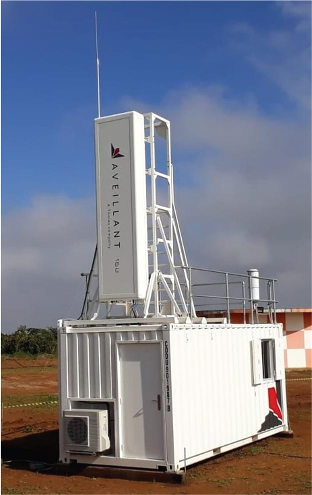
Figure 2.3 Aveillant holographic radar
In addition to design constraints, active radar systems may also be constrained by what frequency and bandwidth they can be licenced to operate at in the area they are positioned. The ‘crowded spectrum’ issue – the competing demand for access to the RF bands driven largely by the huge growth in mobile communications in recent years – has led to an increased interest in passive radar systems which can exploit persistent pervasive signals from other systems. This not only gets round the problem of claiming a section of the RF spectrum to operate in but can also lower the cost of owning and operating the system as it does not need to transmit reducing the complexity of the technology and the power required to operate it. The down side to this is that the power of illumination and selection of the waveform are no longer under the control of the system designer.
So what is the optimum system for countering drones? When there are so many diverse scenarios in which drones pose varying levels of threat, the idea that there is a single solution to the problem should probably be dismissed from the outset. What we can be certain of is that radar, or more broadly exploitation of the RF spectrum for detecting and identifying drones, can and will be a significant part of dealing with a growing problem. The following chapters will set out in detail concepts for how radar can be used as part of a counter-drone system. The system designer should consider each in detail and determine how they can be used to meet the requirements of their end user.
2.4 System design examples
2.4.1 Compact electronically scanned pulse-Doppler radar
Let us first consider a radar of the class of the PicoSAR radar which formed the range-Doppler maps in Figure 2.2 – a compact, electronically scanned rectangular array. The system parameters assumed for the radar we will analyse are given in Table 2.1.
Table 2.1 Typical parameters for a compact pulse-Doppler radar system
| Parameter (symbol) | Value(s) |
|---|---|
| Operating band | X-band (9–10 GHz) |
| Wavelength (λ) | 0.03 m (nominal) |
| Peak antenna gain (Gp) | 25 dB |
| 3 dB beamwidth in azimuth (unsteered) | 5° |
| 3 dB beamwidth in azimuth (unsteered) | 12° |
| Electronic steering limits | ±70° |
| Peak power (Pp) | 200 W |
| Duty ratio (DR) | 20% (maximum) |
| PRF | 100 Hz to 100 kHz |
| Coherent processing interval (NCPI) | Up to 10,000 pulses |
| Receiver noise figure (FN) | 3 dB |
| System operating temperature (T) | 290 K (nominal) |
| Losses (L) | 3 dB (nominal) |
These will allow us to design a waveform (or waveforms) for drone detection and classification using standard radar theory. Before doing that, we need to make some assumptions on the drone we are trying to detect. Let us assume that it is an openly available drone for the better off hobbyist or low-cost commercial use that can carry a camera size/weight payload and that it has a mean radar cross-section (σ) of 0.001 m2. The DJI website [7] gives the maximum speed of this class of drone as 72 kph which is 20 m s−1. If we assume that the drone could be carried by a strong wind of up to 10 m s−1, then the range of speeds we need to be able to detect at is ±30 m s−1 (with the drone opening or closing on the radar).
The starting point for waveform design is to consider adapting an existing waveform, as this has obvious benefits in both the amount of work required to develop it and the level of testing and verification which has to be applied. In turn, the cost of adapting the system could be significantly reduced making it more affordable to multiple agencies. Detecting drones is most similar to the MTI waveforms used in radar to detect ground vehicles, helicopters and increasingly people. The conventional approach in designing an MTI waveform is to assume that the pulse repetition frequency (PRF) is selected such that range rate measurement can be made unambiguously. In this case, we need the range rate ambiguity (va) to be 60 m s−1, so
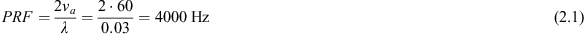
Radar systems were originally designed to detect objects as far beyond human sight as possible. It is thus conventional to operate the radar with the highest mean power it can output which means operating at the highest duty ratio than can be achieved. For this system that is 20% and the cycle time is defined by the PRF for a pulsed radar so the length of the pulse transmitted, τ, would be
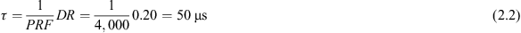
In a monostatic pulsed radar, the radar cannot receive while it is transmitting, which imposes a minimum detectable range, rmin, given by
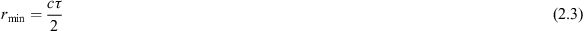
For a maximum duty ratio, this is 7,500 m. Where a drone with such a small RCS can be detected this far away is one consideration which must now be examined. The other is what minimum range is actually required for detecting and tracking the target. This will be driven by the minimum or optimum range at which the selected countermeasure to the drone can be deployed. There is a trade-off in a duty ratio that we need to assess.
An appropriate version of the range equation for this analysis is
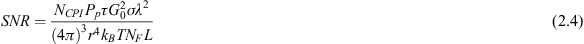
where SNR is the signal-to-noise ratio at the receiver for a drone at range r and kB is the Boltzmann constant. If we assume that an SNR of 10 dB is needed to detect the target, then this equation can be used to determine the maximum range at which the drone is detectable.
The selection of the length of the Coherent Processing Interval (CPI) is another factor in the trade off. The longer the CPI, the greater the SNR. The resolution in measuring the Doppler spectrum that also improves at CPI is increased, and the Doppler bin width being defined as
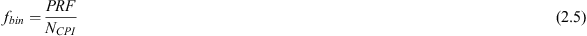
This will become important in measuring the micro-Doppler spectrum of targets. Lengthening the CPI increases the time to measure a target which in turn increases the time needed to search a volume of space. We will examine that trade of later, but first of all we will assume NCPI=128 which is typical for an MTI mode.
The minimum and maximum ranges for different transmitted pulse lengths are shown in Table 2.2. As expected, if the maximum duty ratio is selected, the drone can be detected furthest away; however, there is only an interval of 1,200 m before the minimum range is reached. For the shortest pulse considered, the maximum range is reduced to 3,300 m. Is this far enough away to be useful? If we consider this from the operator’s point of view, an object, the size of a drone over 3 km away is well beyond what could be seen with the naked eye. At the maximum closing speed of the drone, it would still take around 2 min to reach where the system has been set up, which is a reasonable length of time for an experienced operator to decide whether the drone is a threat and what countermeasure should be deployed.
Table 2.2 Variation of minimum and maximum detectable range for a drone with RCS of 0.001 m2 for a pulse-Doppler MTI radar
| Duty ratio (%) | Pulse width () | Minimum range (m) | Maximum range (m) |
|---|---|---|---|
| 20 | 50 | 7,500 | 8,700 |
| 10 | 25 | 3,750 | 7,300 |
| 5 | 12.5 | 1,875 | 6,200 |
| 2 | 5 | 750 | 4,900 |
| 1 | 2.5 | 375 | 4,100 |
| 0.4 | 1 | 150 | 3,300 |
In a modern digital electronically scanned radar system, the ability to generate waveforms and instantly reposition the beam creates a great deal of flexibility which can be exploited in waveform design. To increase the time the operator has to deal with a drone, the optimal strategy may be to search the volume of concern with a longer pulse waveform with the minimum range matched to the maximum range of the countermeasure, for example 750 m, so the 5-μs pulse, which would then extend the search range and increase the time available for decision-making (in this case to around 5 km giving at warning time of nearly 3 min at maximum closing speed). As the drone gets closer, the waveform which optimises the ability to detect and track is selected by the track estimate of position. This ‘track update’ waveform can be interspersed with the search waveform so that a check for further threats can be made.
If hemi-spherical coverage is needed for the counter-drone system, then three of the radar antennas can be positioned in equilateral triangle configuration as shown in Figure 2.4. Each would have its own receiver and signal processor (Rx/Px) controlled by a central processor which also includes a tracker taking inputs from each array and forming the interface to the operator display and control. As the bandwidth of the MTI waveform is around 1 MHz, each array can operate within the 1 GHz coverage of the system in X-band with suitable separation in frequency and isolation between the arrays in the construction of the system.
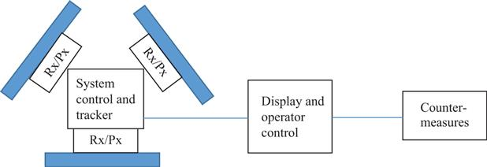
Figure 2.4 Pulse-Doppler radar based counter-drone system
The duration of the CPI is
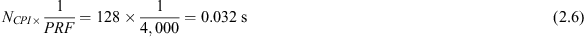
For an electronically scanned array, the beamwidth broadens as the cosine of the electronic steering applied. For this system, the maximum electronic steering angle needed is 60° so at the end of the scan, the beamwidth is 5°/cos(60°) = 10°. If we take an average beamwidth of 7.5°, then to cover the 120° sector, each array needs 120°/7.5°=16, beam positions. In practice, to minimise beam-shape loss and reduce FAR, we would allow something like a 50% overlap of consecutive beams, so 32 positions would be needed. The time to perform a search is then
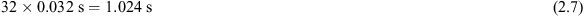
A scan every second provides a sequence of opportunities to detect and measure the drone, which should be sufficient to form and maintain a track.
The final task before deciding on if and how to counter the drone threat is to identify the drone and assess its intent. Using the micro-Doppler spectrum of the drone to do this is the basis of most identification methods. To be able to achieve the measurement of the spectrum, a longer CPI is needed to enhance the SNR of the individual components, have high resolution in frequency to be able to separate these components and allow time to measure the periodicity of the returns. A measurement period of around a second is generally needed to achieve this, for which there should be sufficient time after the track has been established.
This quick analysis tells us that adapting an MTI mode in a compact electronically scanned radar can provide a counter-drone capability. We are not yet in a position to go off and start marketing the radar for that purpose, the only conclusion we can make is that the radar is not unsuitable for the task. Whether it is optimum in terms of performance and cost for customer requirements now needs more detailed thought. Some points for further analysis would be as follows:
- Beam-broadening: when the antenna is scanned to 60° the broadening of the beam also causes a loss in peak gain on transmit and receive. The normal method of compensating for this loss is to extend the CPI as the electronic steering angle increases, which in turn makes the time to search the volume longer. There are trade-offs in beam overlap, beam-shape loss, CPI, etc. which need to be considered here to find the optimum waveform and control set-up to counter the classes of drones the customer has asked for.
- Angular measurement accuracy: given the wide beam-width, it is likely that monopulse measurement in azimuth would be needed to give the required angular accuracy in tracking the target. To achieve this, two channels are needed, which increases hardware and processing costs.
- Height coverage and measurement: similarly, if there is a need to determine the height of the drone to deploy the countermeasure, then elevation monopulse is also required. Two more channels separated in elevation are needed to include this. If we consider the lower part of the main beam positioned on the horizon, then the boresight will be pointing up by 6°. At a 1-km slant range, the 3-dB beamwidth in elevation covers 200 m in height. Given that the legal limit for flying a drone is 400 ft, this would seem to be adequate. Drones of the type we are considering here can fly much higher [8], which is likely for malicious use. Scanning to higher altitudes is feasible but extends the time to search the required volume if the height at which a drone approaches cannot be covered in a single scan.
- Size, weight, power and cost: the solution proposed before requires three simultaneously transmitting radar antennas with receiver–processor units. While this achieves more rapid coverage of the volume of space being protected, it will require more power, be heavier and considerably more expensive than an arrangement of three antennas which switch on and off in sequence to provide the coverage (at the expense of increasing search time by a factor of 3). Whether the lower cost system would have the capability to counter the threats, the customer is most concerned with is a matter to discuss with those purchasing the system.
Performance improvement and/or cost reduction can be achieved through innovative system designs and processing techniques. Some of these may be enhancements to a pulse-Doppler radar of the type discussed here, while others may be entirely novel concepts. The aim of this book is to show how novel approaches to the counter-drone problem can be exploited in a system. Let us first look at a different system concept.
2.4.2 Holographic radar
Now let us consider the design parameters for a holographic (staring) radar such as the Aveillant Gamekeeper 16U radar [9], which was designed primarily for use as a drone detection radar.
Ground-based surveillance radars such as Gamekeeper are required to provide high coverage extending from short to long range with high dynamic range. High dynamic range is needed for a drone surveillance radar for the following reasons:
- The low RCS return of a drone’s body and even lower micro-Doppler components from rotor blades must be sensed in the presence of high stationary clutter and both ground and air targets with high RCS, which are often present where drones fly. For a typical installation, stationary clutter from buildings can be as high as 50 dBm2 (at L band), with drone micro-Doppler components being 90 dB smaller.
- The surveillance objective is to persistently sense drones over the whole of the radar’s instrumented range, which for ground-based drone surveillance radar can represent a significant span. The radar range equation tells us that received power varies as
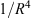
, so the power received from a target at 200 m is 80 dB greater than the same target at 20 km.
Therefore, low duty, low PRF waveforms (where only targets with a range delay of less than one PRI are considered) must be used owing to such a high radar system dynamic range requirement, which is up to 90 + 80 = 170 dB for sensing drones.
The Aveillant Gamekeeper radar operates at a lower frequency radar than the PicoSAR radar, in which such operation benefits from a waveform response with greater combined unambiguous range and velocity space, since Doppler frequency shift is proportional to the illumination frequency. Therefore, at L band, a low PRF waveform that can cover a long-range swath can also unambiguously sense the entire range of likely Doppler frequencies returned from drones.
For example, a PRF of 8,000 Hz provides a maximum unambiguous range of
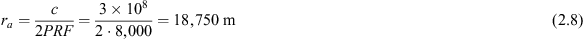
which consequentially provides unambiguous Doppler frequency coverage (noting complex sampling in radar) of
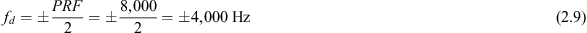
and which relates to maximum unambiguous velocity of
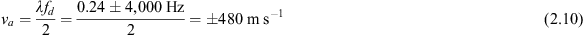
where ±480 m s−1 is a more than adequate radial velocity range covering all types of targets encountered by a ground-based surveillance radar. Given this information, choosing a lower PRF may sound attractive to provide greater maximum unambiguous range for protection against the risk ambiguous returns from large targets (e.g. airliners) that could alias into and appear to be smaller targets within the closer unambiguous coverage range. However, a greater maximum unambiguous range comes at the cost of either increased minimum range or a reduced duty ratio, for example given a 200-m minimum range requirement the maximum duty ratio achievable drops from 1% to 0.5% when the PRF is reduced from 8,000 to 4,000 Hz, since the maximum achievable duty ratio relates to the minimum range:
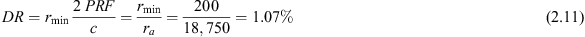
Therefore, since duty ratio affects the sensitivity of a radar, it is more advantageous to use signal processing, tracking and target classification techniques for the mitigation of ambiguous target returns.
Holographic radars differ to other surveillance radars in that they do not scan, their transmitters illuminate their entire 3D coverage sector persistently and multiple simultaneous receive beams are formed to cover the entire 3D coverage sector, see Figure 2.5. This affords three key advantages for drone detection, tracking and recognition:
- Persistent coverage provides very low minimum detectable velocity, enabling slow moving target detection. This is achieved because long coherent dwell times in all 3D sectors simultaneously provides very high velocity resolution, which in turn allows moving targets to be detected against a background of high levels of stationary ground clutter encountered by all ‘near-to-ground’ surveillance radar.
- The high-resolution Doppler frequency provided by long coherent dwells allows for high-resolution sensing of the micro-Doppler signature returned by a drone’s rotor blades, thereby enabling effective recognition.
- Persistent coverage provides high detection rates on all targets, which is essential for effective tracking of drones given their ability to follow agile trajectories. Scanning radars are fundamentally limited in this aspect by their scan rate: such that when scanning radars switch to modes using long coherent dwells to provide the preceding two properties, the scan rates of such radars can be very slow, so detections from any one target will be infrequent.
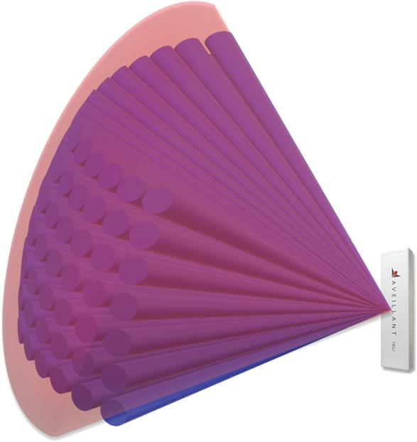
Figure 2.5 Transmit beam pattern (red) and multiple simultaneous receiver beam patterns used by a holographic radar
The disadvantage that holographic (staring) radars have with respect to scanning radars is that transmitter antenna gain is considerably less than a scanning equivalent, given that the transmitter beam is required to persistently illuminate the entire 3D coverage space, whereas a scanning radar can focus its beam on the narrow angular sector which is being sampled any one point in time. In theory, this disadvantage is counteracted by holographic radars being able to coherently integrate over a time period equivalent to the comparative scanning radar scan time; therefore both radars receive the same energy over a defined period. This does, however, lead to the processing loads of holographic radars being greater, since long coherent dwells require long Fourier transforms which need to operate on multiple receiver beams simultaneously.
Holographic radars necessarily have array receiver antennas so that multiple receive beams can be formed, allowing angular direction to be measured. A greater number of receiver antennas provide greater sensitivity owing to the greater total antenna area and greater angular accuracy; however, the greater the number of receivers, the greater the size, the number of receiver channels and hence cost of a radar. Holographic radars are all built from similar modular components allowing flexibility in configuration of a radar to meet the required application. For the drone detection problem, the most important requirement of the antenna array, in addition to sensitivity, is that it provides good elevation accuracy. Good elevation accuracy provides the capability to determine whether a target of interest is airborne or not, particularly given the low altitudes at which drones fly. Therefore, the Gamekeeper radar has four times greater elements vertically that it does horizontally, prioritising elevation accuracy over azimuth accuracy. The Gamekeeper 16U radar has 16-receiver antenna elements vertically by 4-receiver antenna elements horizontally, in which the ‘16’ refers to the number of receiver modules, each of which consists of two-times-two receiver antenna elements and all associated independent receiver chains and digitisers.
To review the sensitivity of the Gamekeeper 16U holographic radar, we use a similar version of the range equation as used in Section 2.4.1 but adapting it for holographic radar in which the receiver and transmitter gains differ and by adding an Array factor to account for beamformer gain when summing across the Array of receiver antenna elements:
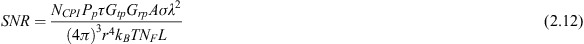
The approximate system parameters assumed for the holographic radar for this analysis are given in Table 2.3.
Table 2.3 Approximate system parameters for the Gamekeeper 16U radar
| Parameter (symbol) | Value(s) |
|---|---|
| Operating band | L band (1,215–1,350 MHz) |
| Wavelength (λ) | 0.24 m (nominal) |
| Peak transmitter antenna gain (Gtp) | 13 dB |
| Transmit antenna 3 dB azimuth beamwidth | >90° |
| Effective* transmit antenna elevation beamwidth | ±30° |
| Peak receiver element antenna gain (Grp) | 6 dB |
| Receiver antenna element 3 dB azimuth beamwidth | >90° |
| Receiver antenna element 3 dB elevation beamwidth | >90° |
| Number of receiver elements | 64 (16×4) |
| Peak power (Pp) | 2 kW |
| Typical duty ratio (DR) | 1% |
| Typical PRF | 8 kHz |
| Typical coherent processing interval (NCPI) | 4,096 pulses |
| Receiver noise figure (FN) | 4 dB |
| System operating temperature (T) | 290 K (nominal) |
| Losses (L) | 8 dB (nominal) |
*Note the transmit antenna is shaped in elevation to provide greater sensitivity at elevations closer to horizontal.
For a surveillance radar, we assume that a threshold SNR of at least 16 dB is required to detect a target, which provides an acceptable FAR given many simultaneous detection decisions are made independently over multiple ranges, azimuth, elevation and Doppler frequency cells. This threshold though atypically high also provides some margin for the inhomogeneity in background noise encountered when detecting against a complex background containing high clutter and potential EMC sources, which can be encountered in environments in which drones fly.
Comparatively high losses for the Gamekeeper radar (with respect to other radars) are quoted in Table 2.3. This loss covers a number of worst case losses that may be encountered over the entire surveillance coverage volume, which is as follows:
- Beam loss with respect to the peak gains achieved at the boresight of both the transmitter and receiver arrays; this is common to all non-mechanically scanned radars.
- Signal-processing losses, such as those caused by windows applied to time series and antenna aperture and losses in the necessary constant false-alarm rate detector, which is common to all array antenna pulse Doppler radars.
In addition to the 16 dB surveillance operation threshold, here, we also consider a lower SNR detection threshold of 10 dB, which is more appropriate for the detection of the micro-Doppler components in the return of a drone. This lower threshold is appropriate due to the following reasons:
- Further discrimination processes are applied to recognise multiple micro-Doppler components in the Doppler frequency spectrum, which reduces the risk of false alarms.
- Micro-Doppler recognition is often only used a following detection and hence such processes only operate on focussed 3D resolution cells of interest, so a surveillance assumption is not appropriate.
The parameters in Table 2.3 and the equation for SNR quoted in this section determine the maximum range at which a drone’s radar return is detectable given different SNR threshold levels. Table 2.4 provides these ranges for common RCSs. For context, at L band the RCSs of readily available quadcopters are typically 0.01 m2, whilst micro-Doppler components can be up to 20 dB below a drone’s dominant return, whilst larger drones do offer higher returns.
Table 2.4 Derived range performance from the Gamekeeper 16U radar parameters
| RCS (m2) | Range (SNR = 16 dB) (m) | Range (SNR = 10 dB) (m) |
|---|---|---|
| 0.1 | 13,900 | 19,700 |
| 0.01 | 7,800 | 11,100 |
| 0.001 | 4,400 | 6,200 |
| 0.0001 | 2,500 | 3,500 |
The ranges calculated in this exercise show that Gamekeeper can provide long-range surveillance despite the small size of drones and the environments in which they are encountered. In addition, L band radar operation provides a consistency of performance, in particular being little affected by attenuation and backscatter from rain and other weather-related affects, which lends its use to applications that require higher levels of assurance.
References
[1] https://www.bbc.co.uk/news/uk-england-sussex-49846450, accessed March 2021.
[2] https://www.bbc.co.uk/news/uk-england-45980560, accessed March 2021.
[3] https://www.bbc.co.uk/news/world-latin-america-45073385, accessed March 2021.
[4] https://www.caa.co.uk/Consumers/Unmanned-aircraft/Our-role/Drone-and-model-aircraft-registration/, accessed March 2021.
[5] https://www.bbc.co.uk/news/technology-39277940, accessed March 2021.
[6] https://www.leonardocompany.com/en/products/picosar-1, accessed March 2021.
[7] https://www.dji.com/uk/products/compare-consumer-drones, accessed March 2021.
[8] https://www.technik-consulting.eu/en/analysis/drone.html, accessed March 2021.
[9] https://www.aveillant.com/products/gamekeeper/, accessed March 2021.
1Leonardo UK Ltd, London, United Kingdom
2Aveillant Ltd, Cambridge, United Kingdom